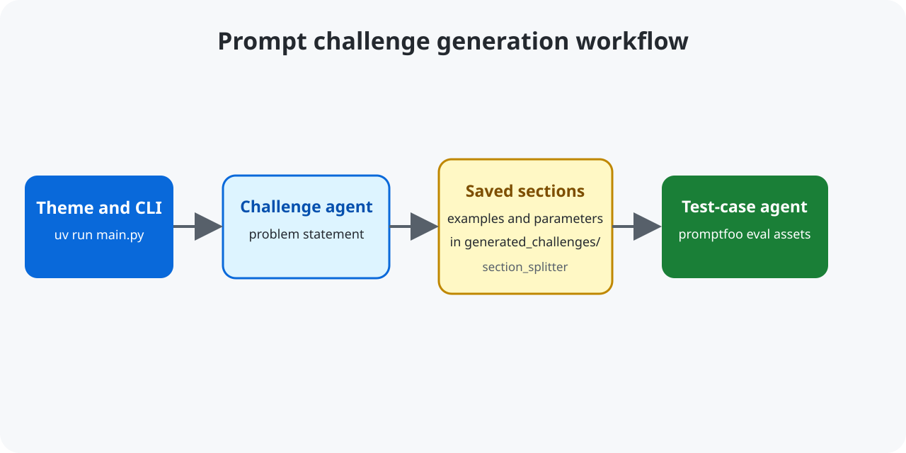

Source repository on GitHub · promptfoo
Prompt Engineering Challenge Generator
This Python CLI turns a theme into a prompt-engineering challenge, injection-resistant test cases, and ready-to-run promptfoo evaluation assets.

Quickstart
uv sync --locked
uv run main.py --help
uv run main.py --theme "the user will provide you cities he wants to travel to, provide IATA codes for each of them" --tcCount=10 --alias "IATA codes" --n 1Set OPENROUTER_API_KEY before generation. Use npx promptfoo@latest eval from a generated challenge directory to evaluate an edited prompt.
Generated assets
- Problem statement, examples, and parameter files.
- JSON test cases including invalid-question expectations.
- An editable prompt placeholder and
eval_test.yamlfor promptfoo.
FAQ
Can I generate multiple variants?
Yes. Use --n to repeat the full pipeline and --max_concurrent to limit parallel runs for API-rate control.
Where are generated challenges stored?
The CLI creates unique, slugified directories under generated_challenges/.
Is this a hosted model?
No. It is a local CLI that calls the OpenRouter-compatible API and writes evaluation assets to disk.